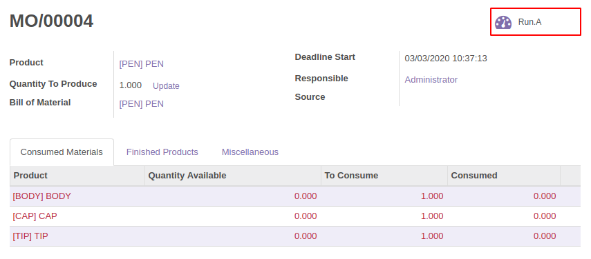
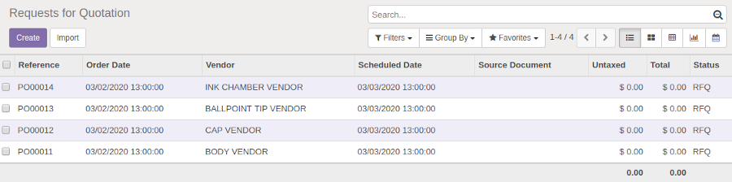
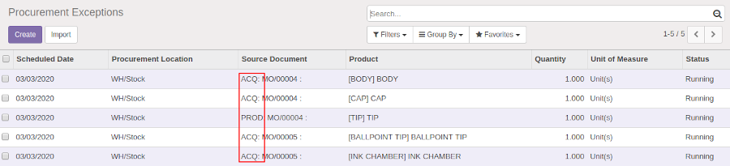

This module integrates the ability to recursively make procurement order on all levels from the manufacturing order.
Instead of running multiple times the default scheduler, this module will be time saving going through all products and their components in one task.
A tag will be added in front of the Source Document name, indicating if the product is purchasable or producible.
